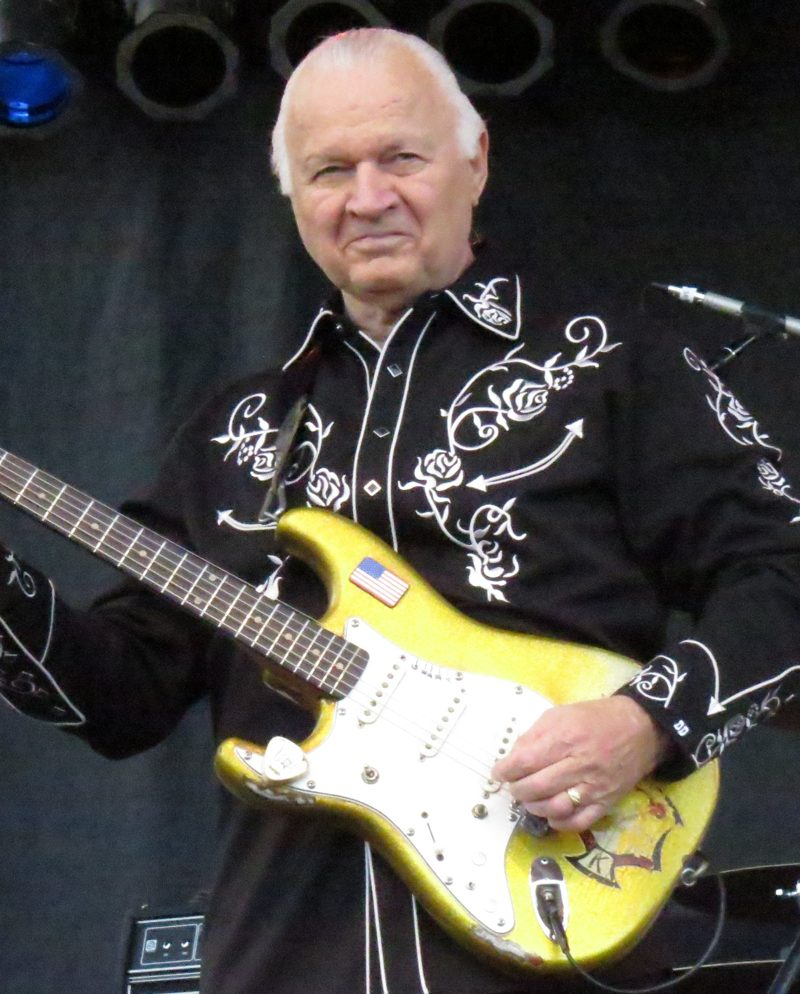

Miserlou by Dick Dale and His Del-Tones came out on April 21, 1962, on Dale's own Deltone label.
It took a slow Eastern Mediterranean folk song and fired it off at machine-gun speed.
It never made the national charts, yet it became the anthem of surf rock.

Table of Contents
- Where Did Misirlou Come From?
- How Dale Rebuilt the Song
- The 1962 Single and Surfers' Choice
- Versions and Covers
- Pulp Fiction and a Second Life
- FAQ
Where Did Misirlou Come From?
Nobody knows who wrote it.
By the 1920s it was played by Arabic, Greek rebetiko and Jewish klezmer musicians alike.
Tetos Demetriades made the earliest known recording in 1927.
The title comes from the Turkish word for "Egyptian."
The Greek ending makes it feminine, so it is usually read as "Egyptian girl."
The American Versions Before Dale
- Nick Roubanis, a Greek-American music teacher, issued a jazz arrangement in 1941 and claimed composer credit.
- Harry James took it to No. 22 the same year.
- Pianist Jan August reached No. 7 on the Billboard jockey chart in 1946.
Nobody challenged Roubanis in court, so his name is still on the song.
Fred Wise, Milton Leeds and Chaim Tauber share the credit for the English lyrics.
How Dale Rebuilt the Song
Dale grew up with it: his Lebanese uncles played the tune on the oud, a fretless lute.
A much-repeated story says a young fan bet him he could not play a song on one string.
It has never been firmly sourced.
Too Slow for the Rendezvous
"I started playing it, and I said, 'Oh no, that's too slow,'" Dale told NPR in 2010.
He had started out as a drummer, and he thought of Gene Krupa's staccato drumming.
He turned that rhythm into rapid tremolo picking on a Fender Stratocaster.
The first night he played it live, he told the Los Angeles Times in 1981, people "came rising up off the floor."
They were chanting and stomping, he said, and he called it the start of the surfer's stomp.
The 1962 Single and Surfers' Choice
Deltone issued the single on April 21, 1962, with "Eight Till Midnight" on the B-side.
It runs 2:15, and Jim Monsour is credited as producer.
It was a local, self-released record, and it never reached the Billboard Hot 100.
In November, the band's debut album, Surfers' Choice, included the tune as "Misirlou Twist."
That album was mostly cut live at the Rendezvous Ballroom in Balboa.
The single helped land a deal for Capitol Records to distribute the album nationally.
Hear what else charted that year in our 1962 music guide.
Versions and Covers
| Year | Who | Notes |
|---|---|---|
| 1927 | Tetos Demetriades | Earliest known recording |
| 1941 | Harry James | Big band, No. 22 |
| 1946 | Jan August | Piano, No. 7 jockey chart |
| 1962 | Dick Dale and His Del-Tones | Surf rock single on Deltone |
| 1963 | The Beach Boys | On the album Surfin' U.S.A. |
| 2006 | The Black Eyed Peas | Built "Pump It" on Dale's record |
The Beach Boys cut a Dale-style version, and the Ventures and the Trashmen recorded rock takes too.
Pulp Fiction and a Second Life
Dale had stepped back from music in the 1970s and was playing again in the 1980s.
Then Quentin Tarantino put the 1962 recording over the opening credits of Pulp Fiction in 1994.
"Having Misirlou as your opening credit, it's just so intense," Tarantino told Rolling Stone.
"It just says you're watching an epic."
MCA released the soundtrack on September 27, 1994, with Dale's track first.
The album reached No. 21 on the Billboard 200 and sold more than 3 million copies.
Rolling Stone's guide to the film's music gives this track its own entry.
From Q Magazine to Pump It
- Q magazine ranked it No. 89 of the 100 greatest guitar tracks in March 2005.
- will.i.am heard it on a compilation he bought by mistake in Brazil.
- The Black Eyed Peas' "Pump It" reached No. 18 on the Billboard Hot 100 in March 2006.
Read the full career story in our Dick Dale biography.
For more reverb and tremolo, visit the Garage and Surf Rock hub.
It also sits on our list of the best 60s songs.
FAQ
Who wrote Misirlou?
Nobody knows.
It is a folk song, first recorded in 1927.
Nick Roubanis claimed credit in 1941 and is still listed.
What does Misirlou mean?
It comes from the Turkish word for "Egyptian."
The Greek ending makes it feminine, so it is often translated as "Egyptian girl."
Was Miserlou a hit in 1962?
No.
It was a local release on Dale's own label and did not reach the Billboard Hot 100, though it became the signature song of surf rock.
What movie starts with Misirlou?
Pulp Fiction, the 1994 Quentin Tarantino film.
Dale's recording plays over the opening credits.
What song samples Misirlou?
The Black Eyed Peas built their 2006 hit "Pump It" on Dale's recording.
The Wikipedia entry on Misirlou traces the song's many versions in full.
Turn it up and hear Miserlou by Dick Dale and His Del-Tones the way the Rendezvous crowd did.